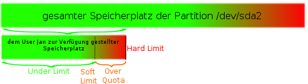

Quota
Dieser Artikel wurde für die folgenden Ubuntu-Versionen getestet:
Dieser Artikel ist größtenteils für alle Ubuntu-Versionen gültig.
Zum Verständnis dieses Artikels sind folgende Seiten hilfreich:
Als Administrator eines Ubuntu-Systems (und natürlich jedes anderen Betriebssystems auch) möchte man eventuell nicht, dass die Benutzer zu viel Festplatten-Speicherplatz verbrauchen. Ist beispielsweise der Speicherplatz der Home-Partition vollständig aufgebraucht, so können sich die Benutzer oftmals nicht einmal mehr am grafischen X-Desktop anmelden, da hierbei Dateien erstellt werden müssen. Des Weiteren läuft ein System langsamer, wenn eine Festplatte, die gebraucht wird, "randvoll" ist. Abhilfe schafft hier das Programm Quota.
Quota erlaubt es, den Festplattenspeicher eines Systems spezifisch einzuschränken.
Alle in der /etc/fstab [4] gelisteten Geräten und Partitionen können beschränkt werden, solange diese beschreibbar und in einem gängigen Linux-Dateisystem vorliegen.
Jedes dort gelistete Gerät und jede Partition kann individuell für einzelne Benutzer oder auch für ganze Gruppen eingeschränkt werden.
Die Einschränkung kann sich sowohl auf den Festplatten-Speicherplatz beziehen, welcher zur Verfügung gestellt werden soll, als auch auf die Anzahl an Daten (inklusive Ordner), die angelegt werden dürfen.
Man kann darüber entscheiden, ob neben dem Verhindern einer weiteren Speicherplatz-Vergabe weitere Aktionen ausgeführt werden sollen, beispielsweise das Benachrichtigen der betroffenen Person per E-Mail.
Quota funktioniert, ganz gleich ob der Benutzer lokal am Rechner arbeitet oder von extern, z.B. per SSH oder FTP auf diesen zugreift.
Hinweis:
Die ständige Überprüfung aller Dateizugriffe daraufhin, ob eine Grenze überschritten wird, ist natürlich nicht ohne Folgen. Quota belastet die Leistung der Festplatte. Ist die Zugriffsgeschwindigkeit ein wichtiges Kriterium, kann man durch Partitionieren erreichen, dass Benutzer nicht den wichtigen Anwendungen den Plattenplatz wegnehmen. Daher sollte man Quota nur auf Partitionen aktivieren, auf denen Benutzer ihre Daten ablegen.
Wie funktioniert Quota?¶
Quota wird nach der Installation vom System als Dienst ausgeführt. Es wird standardmäßig beim Booten geladen und muss daher nicht explizit gestartet werden. Nach dem Hochfahren wertet das Programm einige Dateien aus und sorgt nun selbstständig dafür, dass die Benutzer oder Gruppen nicht zu viel Speicherplatz in Anspruch nehmen.
Im Folgenden werden einige Begriffe erklärt, die man verstehen sollte, wenn man Quota verwenden will.
Number of Disk Blocks und Number of Inodes¶
Ein Speicherplatz-Limit wird an der Stelle "Number of Disk Blocks" gesetzt, die Einheit eines Disk Blocks ist dabei ein Kilobyte. Ein Datei-Anzahl-Limit wird an der Stelle "Number of Inodes" gesetzt.
Under Quota¶
"Under Quota" bezeichnet den Zustand, welchen ein Benutzer oder eine Gruppe aus der Sicht von Quota hat, wenn der Umfang des verbrauchten Speicherplatzes und die Anzahl seiner angelegten Dateien sowohl das "Soft Limit" als auch das "Hard Limit" unterschreiten.
Limits¶
Hinweis:
Die Limits werden in Dateisystemblöcken festgesetzt. Wie groß die Blocke sind, findet man mit den jeweiligen Verwaltungstools zum Dateisystem heraus, beispielsweise tune2fs für ext-Dateisysteme.
Hard Limit¶
"Hard Limit" gibt den maximal zur Verfügung gestellten Speicherplatz oder die maximale Dateianzahl an. Der Benutzer kann dieses Limit nie überschreiten. Sollte er an dieses Limit stoßen, so hat es für ihn den gleichen Effekt, als wäre kein weiterer Speicherplatz auf der Partition vorhanden.
Hinweis:
Befindet sich ein Benutzer nahe am durch Quota gesetzten Hard Limit, so kann er sich eventuell nicht einmal mehr an der grafischen Oberfläche anmelden, da hierfür Speicherplatz für neu erstellte Dateien gebraucht wird. In dem Fall kann nur noch der Administrator durch eine Erweiterung des Hard Limits helfen, oder der User loggt sich in ein System-Terminal und löscht von dort Dateien.
Soft Limit¶
"Soft Limit" ist eine Begrenzung, welche kleiner oder gleich dem Hard Limit gesetzt werden muss. Wird das Soft Limit überschritten, so erhält der Benutzer den Zustand "Over Quota". Das Soft Limit kann bis zum Wert des Hard Limits überschritten werden, was allerdings mit Konsequenzen verbunden ist, welche vom Administrator bestimmt werden.
Ist die Verwendung eines Soft Limits nicht erwünscht, so werden die Limit-Werte von Soft Limit gleich denen von Hard Limit gesetzt.
Grace Period¶
Ist ein Benutzer Over Quota, hat also das Soft Limit überschritten, so erhält er eine Frist, die "Grace Period" genannt wird. Standardmäßig beträgt sie sieben Tage, kann aber frei vom Administrator gewählt werden. Während dieser Frist muss der Benutzer oder die Gruppe durch Verlagern, Löschen oder Komprimieren von Dateien den verbrauchten Speicherplatz wieder soweit reduzieren, dass der Under Quota Zustand erreicht wird.
Um sicherzugehen, dass sie von dem Umstand in Kenntnis gesetzt werden, können Administrator, Benutzer oder Gruppe über das Vorkommnis per E-Mail oder System-Mail informiert werden.
Sollte der Benutzer die Frist von Grace Period versäumen, so nimmt sein derzeitig verbrauchter Speicherplatz das Hard Limit ein. Der Benutzer kann nun nicht mehr produktiv arbeiten und muss sich nun an den Administrator wenden, damit dieser ihm entweder die Frist verlängert, das Hard Limit etwas erhöht oder selber Dateien löscht.
Grafik¶
Hier eine kleine Grafik, um die ganze Sache an einem Beispiel grafisch zu erläutern.

Auf der Partition /dev/sda2, welche als /home eingehängt wird, wird der Speicherplatz vom User Jan eingeschränkt. Sein Speicherplatz ist aufgeteilt in Under Limit und Soft Limit. Hard Limit stellt die ihm gesetzte Grenze dar.
Installation¶
Quota ist nicht von Haus aus auf einem Ubuntu-System installiert. Damit Quota funktioniert, muss man das Paket
quota
nachinstallieren [1].
Nicht zwingend notwendig ist das Paket
quotatool
welches das Einstellen enorm vereinfacht und hier auch erklärt wird.
Konfiguration¶
fstab einstellen¶
Im Folgenden wird anhand des oben grafisch dargestellten Beispiels erklärt, wie man nun eine konkrete Einschränkung vornimmt, und werden alternative Einstellmöglichkeiten aufgezeigt.
Nach der Installation muss als erstes die Datei /etc/fstab mit Root-Rechten in einem Texteditor geöffnet werden. Hier müssen nun die Dateisysteme gekennzeichnet werden, auf welchen Orte eingeschränkt werden sollen, damit Quota weiß, was kontrolliert werden soll.
Hier eine Passage einer /etc/fstab, in welcher die /home-Partition gemountet wird. Dort liegt der Ordner ./Jan, welcher beispielshalber eingeschränkt wird:
# Entry for /dev/sda2 : UUID=a2798917-95d8-4805-aa4d-d06fa863a67c /home ext3 relatime 0 2
Damit Quota auf ein Dateisystem aufmerksam wird, müssen nun dieser Zeile ein oder zwei Attribute zugefügt werden [2]:
usrquota- Hiermit können Einschränkungen für einzelne Benutzer eingerichtet werden.grpquota- Hiermit können Einschränkungen für ganze Gruppen eingerichtet werden.
Im Beispiel, wo später der Benutzer "Jan" eine Einschränkung erfahren soll, sieht die Zeile dann folgendermaßen aus:
# Entry for /dev/sda2 : UUID=a2798917-95d8-4805-aa4d-d06fa863a67c /home ext3 relatime,usrquota 0 2
Hinweis:
Es ist auch möglich, auf der gleichen Partition Einschränkungen sowohl für Benutzer als auch für Gruppen gleichzeitig zu setzen. In diesem Fall fügt man einfach beide Attribute, durch Komma getrennt, an.
Nun muss das Dateisystem neu eingehängt werden. Wurde (wie in diesem Beispiel) das /home-Verzeichnis oder gar das Wurzelverzeichnis selber mit einem Attribut erweitert, funktioniert dies in der Regel nur durch einen Computer-Neustart. Für das /home-Verzeichnis kann man sich allerdings auch einfach aus allen bestehenden Benutzersitzungen abmelden und dann mit
Strg +
Alt +
F1 in eine Textkonsole wechseln. Dort meldet man sich nun als root an und führt das Kommando init 1 aus. Dadurch wird das Betriebssystem vom Mehrbenutzerbetrieb in den Einzelbenutzerbetrieb geschaltet. Da root seine Partition auf /root und nicht auf /home hat, kann man nun die /home-Partition aushängen und wieder erneut einhängen. Anschließend wechselt man wieder mit init 3 in den Mehrbenutzermodus, meldet sich aus dem root-Konto ab und wechselt mit
Strg +
Alt +
F7 wieder auf den grafischen Anmeldebildschirm.
Hinweis:
Für diese Prozedur muss für root ein Passwort gesetzt sein.
Automatisches Erstellen der Dateien aquota.user beziehungweise aquota.group¶
Damit Quota funktionieren kann, müssen nun Informationen über die Datei-Rechte der einzelnen Benutzer und Gruppen auf der einzuschränkenden Partition gesammelt werden. Diese Informationen werden in Dateien namens quota.user und / oder quota.group in den jeweiligen Orten gespeichert.
Hierfür führt man als Root folgenden Befehl aus [3]:
sudo quotacheck OPTIONEN
Die Optionen sind
-afür all, also für alle zu überwachenden Dateisysteme aus der /etc/fstab-cfür create, also Schreiben der Dateien auf die Festplatte-ffür force, also Erzwingen der Operation-Mfür try-remount, führt die Operation gegebenenfalls ohne Remount durch-ufür das Erstellen der aquota.user Datei, falls erforderlich-gfür das Erstellen der aquota.group Datei, falls erforderlich
In diesem Beispiel findet man nun im /home-Verzeichnis eine Datei aquota.user vor, die ja für diesen Nutzer angelegt wurde.
Abschließend¶
Jetzt muss Quota neu gestartet werden:
sudo /etc/init.d/quota restart
Um den Zugriff auf die Quota-Einträge für Benutzer und Gruppen nur dem root-Nutzer zu erlauben, ist Folgendes auszuführen:
sudo chmod 600 /quota.*
Die korrekte Funktionalität kann nun getestet werden. Folgender Befehl gibt eine Ansicht der Quota-Informationstabelle für Benutzer und Gruppen aus:
sudo repquota /
Hierbei bitte beachten, dass noch keine Quotas gesetzt sind.
Einstellungen¶
Einen User einschränken¶
Am Beispiel des Benutzers "otto" soll erklärt werden, wie man einen einzelnen Benutzer im Platzverbrauch auf der Festplatte einschränken kann. Der Befehl [3]
# Allgemein sudo edquota -u <benutzername> # Beispiel sudo edquota -u otto
öffnet einen Editor, um die Quota für den Benutzer otto und alle Partitionen, für die Quota aktiviert wurde, zu editieren:
Disk quotas for user otto (uid 1001):
Filesystem blocks soft hard inodes soft hard
/dev/hda2 28 100000 102400 7 0 0"blocks" zeigt die durch den User otto verwendeten Blöcke (in kB) für diese Partition an; "inodes" zeigt die Anzahl der Dateien an, die dem User otto gehören. Ändern sollte man nur die Werte soft und hard, die das Soft Limit und Hard Limit festlegen.
Eine Gruppe einschränken¶
Mittels des Befehls [3]
# Allgemein sudo edquota -g <gruppenname> # Beispiel sudo edquota -g users
Disk quotas for group users (gid 999):
Filesystem blocks soft hard inodes soft hard
/dev/hda3 549 200000 204800 57 0 0editiert man die Einstellungen für eine Gruppe.
Mehrere User einschränken¶
Möchte man Werte für Quota für alle Benutzer des Systems setzen, so kann man sich eines kleinen Shellskriptes behelfen. Zuerst setzt man die Quota-Werte bei einem Benutzer, beispielsweise wieder "otto". Danach führt man in einem Terminal [3]
sudo edquota -p otto `awk -F: '$3 > 1000 {print $1}' /etc/passwd` aus. Dies überträgt die bei "otto" gesetzten Quota-Einstellungen auf alle lokalen Benutzer (also alle Benutzer mit einer Benutzer-ID, die größer als 1000 ist).
Grace Period setzen¶
Die Grace Period kann man mittels
sudo edquota -t
Grace period before enforcing soft limits for users: Time units may be: days, hours, minutes, or seconds Filesystem Block grace period Inode grace period /dev/hda3 1day 1day
setzen. Hierfür können die Zeiteinheiten sec(onds), min(utes), hour(s), day(s), week(s) und month(s) verwendet werden.
Quota-Kommandos¶
Quotacheck¶
Quotacheck scannt das Dateisystem nach der aktuellen Plattenauslastung:
sudo quotacheck -avugm
quotacheck: Scanning /dev/sda1 [/] done quotacheck: Checked 22685 directories and 177183 files
Repquota¶
Repquota liefert einen Bericht:
sudo repquota /
*** Report for user quotas on device /dev/sda1
Block grace time: 7days; Inode grace time: 7days
Block limits File limits
User used soft hard grace used soft hard grace
----------------------------------------------------------------------
root -- 3770548 0 0 198636 0 0
daemon -- 56 0 0 5 0 0
...
otto +- 102524 95000 120000 6days 7 0 0
- Erstellt mit Inyoka
-
 2004 – 2017 ubuntuusers.de • Einige Rechte vorbehalten
2004 – 2017 ubuntuusers.de • Einige Rechte vorbehalten
Lizenz • Kontakt • Datenschutz • Impressum • Serverstatus -
Serverhousing gespendet von